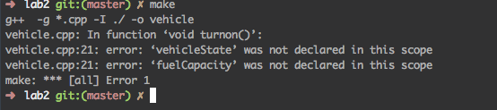

Assignment 2
Log
- Red the specifications and created the header file for the class Vehicle.
- Implemented the class Vehicle in vehicle.cpp
- Could not compile. Got a weird error about unable to link the header files
- The above error was due to a mistake that I made in the Makefile. I forgot to include the path to the header files. g++ was looking for the header files in another location.
- g++ still wont let me compile. The error says that it could not find the data members in all the functions that i declared in vehicle.cpp. Here is an example of an error.

- the error was because I did not include Vehicle:: before the methods names in vehicle.cpp!
- finally managed to compile
- created main.cpp file from the specification
#TODO
- Implement class Vehicle in vehicle.cpp
- resolve the linking issue
- Figure out why data members are not declared in all of the functions.
- test vehicle class using the main.cpp file provided
- upload to d2l
#Known Issues/Limitations
- Cannot compile due to a linking issue
- Cannot compile because of a undeclared data member errors
#Algorithm
turnon:
if the vehicle is OFF and amount of FUEL is greater than 0:
turn vehicle on
print “the vehicle has started”
if the vehicle is ON:
print “the vehicle is already on”
if no FUEL:
print “there is no fuel in the vehicle”
turnoff:
if vehicle is ON:
turn vehicle OFF
print “the vehicle has been turned off”
if vehicle is OFF:
print “the vehicle is not running”
go:
if vehicle is ON and there is FUEL:
decrease FUEL_CAPACITY by FUEL_USAGE_RATE
print “going...”
if no FUEL:
print “vehicle is out of fuel”
reset FUEL to 0 //This is because FUEL variable could be negative
turn vehicle OFF
addFuel FUEL_TO_BE_ADDED:
if FUEL_TO_BE_ADDED is less than or equal to 0:
print “cannot take away fuel”
if FUEL_TO_BE_ADDED is greater than 0:
add FUEL_TO_BE_ADDED to FUEL_CAPACITY